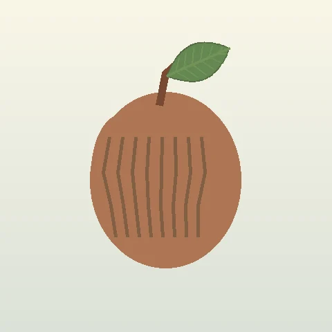

Fruit desiccation
Shriveling fruit
This is one possible explanation. Compare the signs below with those on your plant.

What to look for
Check the stalk and nearby foliage. Note whether softening or wrinkling appeared first.
Possible causes and next steps
Damaged branches or uneven water supply can shrivel fruit. Inspect the stem and soil and remove dried, decaying fruit.